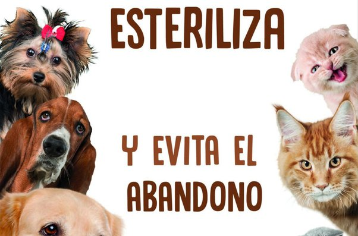

En este sentido, es importante que si tienes deseos de adoptar a un animal de compañía tomes sensibilización sobre el hecho y todo lo que acarrea. Antes de tomar la decisión valora una serie de aspectos:
- Reflexión. Antes de adoptar a un animal valora todo lo que conlleva, sus cuidados y su atención.
- Información. Pide asesoramiento a los profesionales adecuados sobre qué tipo de animal o raza es mejor en función de cada situación familiar y personal.
- Esterilización. Esteriliza a tu animal de compañía para evitar así camadas no deseadas.
- Identificación. Protegerás al animal en caso de pérdida.
- Educación. Si educamos al animal desde el primer momento lograremos que la convivencia sea mucho más llevadera.
